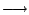

g(Xi) for some g with E(g(X))=0.
g(Xi) for some g with E(g(X))=0.
| [Stat Inf II classnotes, ISI, Kolkata] |

R. Let Un denote the corresponding U-statistic based on an iid sample of size n.
Exercise USTAT3.1:
Show that if E(h2) <
then
n Var(Un) m S1 |
Exercise USTAT3.2:
Use the last exercise to show
that
Un θ in probabilityif E(h2) < , where θ = E(Un). |
Actually something much stronger is true, as we shall see below.
L2 = {f :Rn R such that E(f(X1,...,Xn)2) < }For f in L2 define its norm
||f||2 = E[ f(X1,...,Xn)2 ]Define V
 L2 as consisting of all f such that E(f)=0.
Define L
V as consisting of all f in V
such that
L2 as consisting of all f such that E(f)=0.
Define L
V as consisting of all f in V
such that
f =
| Exercise USTAT3.3: Show that V is a subspace of L2, and L is a subspace of V. |
Given symmetric f in V define g :Rn R as
g(x1,...,xn) =
| Exercise USTAT3.4: Show that g is in L. Why do you need the symmetry assumption? |
Exercise USTAT3.5:
Show that for any b in L,
||f-b||2 = ||g-b||2 + ||f-g||2 .Hence conclude that g is the orthogonal projection of f onto L. |
 m.
We shall assume that h is symmetric, h is in L2 and E(h) = 0.
m.
We shall assume that h is symmetric, h is in L2 and E(h) = 0.
Exercise USTAT3.6:
Show that the orthogonal projection of Un onto
L is
Wn = (m/n) |
| Exercise USTAT3.7: Show that Var(Wn) = O(1/n) |
| Exercise USTAT3.8: Show that Var(Rn) = O(1/n2) and E(Rn) = 0. |
Exercise USTAT3.9:
Hence show that
sqrt(n) Rn 0 in probability. |
| Exercise USTAT3.10: Prove the following theorem by using Slutsky's theorem. |
Theorem:
(CLT for U-statistics)
Let θ = E(Un). Then
sqrt(n) (Un-θ) ~ AN(0,m2S1) |
Theorem:
Rn 0 a.s. |
Proof:
We have already shown that E(Rn) = 0 and
Var(Rn = O(1/n2). So
We shall need two steps to arrive from here to the required conclusion.

|
| Exercise USTAT3.13: Prove the following theorem. |
Theorem:
(SLLN for U-statistics) Let θ = E(Un). Then
Un θ a.s. |